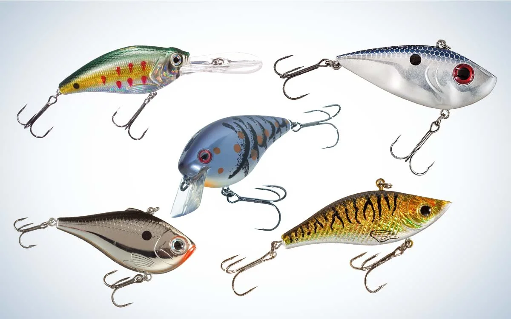
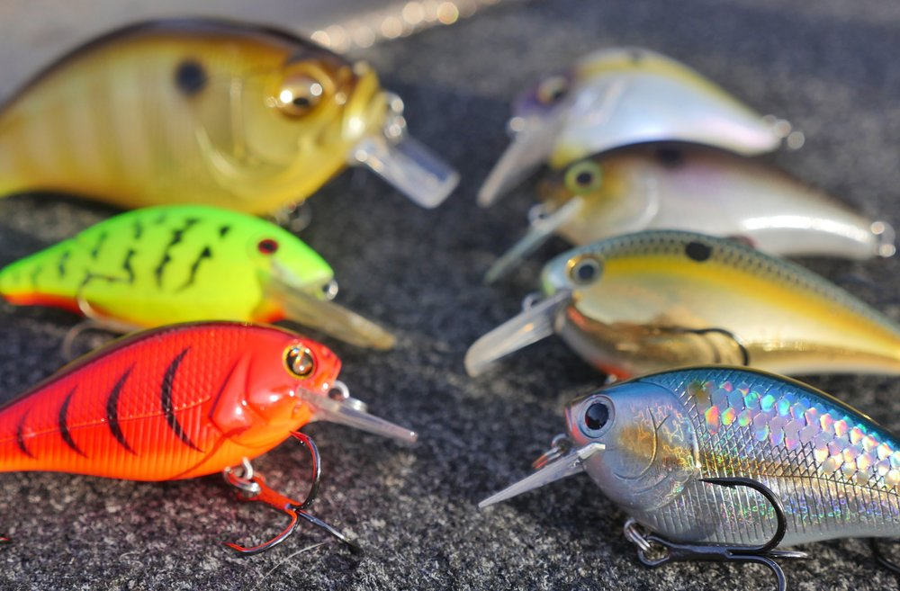
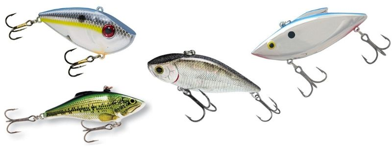

Crankbaits
Crankbaits are hard-bodied lures usually imitating smaller fish or crayfish and constructed out of wood or plastic (internal rattles such as glass or metal beads are also common) with 2 treble hooks. Depending on lip/bill type and size, crankbaits can dive anywhere from 2-25 feet deep. I carry 2 types of crankbaits with me when I fish: squarebill and lipless.
Squarebill Crankbaits
This style of crankbait is named after...its square bill. These generally run more shallow, up to 10 feet. The square bill helps prevent the snags that are so common with treble hooks by deflecting submerged branches and rocks. A medium-speed retrieve is best with squarebills, as it'll get the bait down to its optimal depth but keep it off the bottom and leaves/weeds. When fishing rocky bottoms (more common in rivers and lakes), you actually want the squarebill to be bouncing off and ticking the bottom, as that best represents a fleeing crayfish or minnow. But since this site is dedicated to pond fishing (bottom often mucky and covered with dead leaves and weeds), the aforementioned technique doesn't really apply. This doesn't make squarebills any less viable, but they do need to be presented slightly differently. These excel during spring, summer, and fall (can work in winter). I use squarebills from 5/8 oz down to 1/4 oz. Red or orange (craw patterns) for pretty muddy water, chartreuse (firetiger) for muddy water, and bluegill or shad patterns for clearish water.
Lipless
Lipless cranks lack the "lip" altogether (the top of the bait is usually flattened slightly, giving the lure a tight wiggle). This allows them to be worked in water less than 1 foot deep or down to 20 feet. I find that they're most effective in sections less than 10 feet deep (we're still talking about ponds). Retrieval is generally going to be quick (even very quick), keeping the bait well off the bottom and more towards the middle of the water column. I fish crankbaits all year round, and they're one of my confidence lures for winter-time bass (yes, you can "burn" crankbaits for bass in winter, it works).